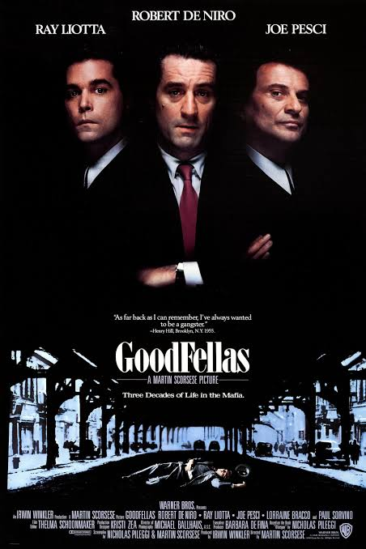
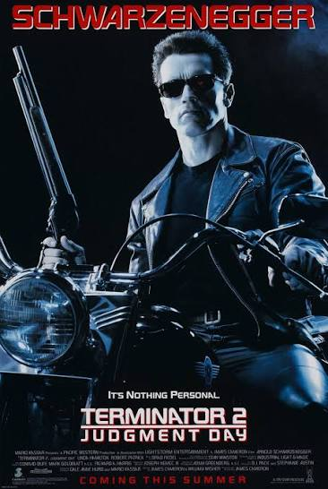
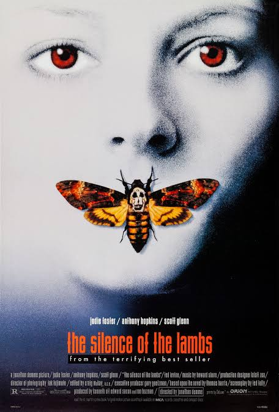
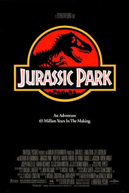
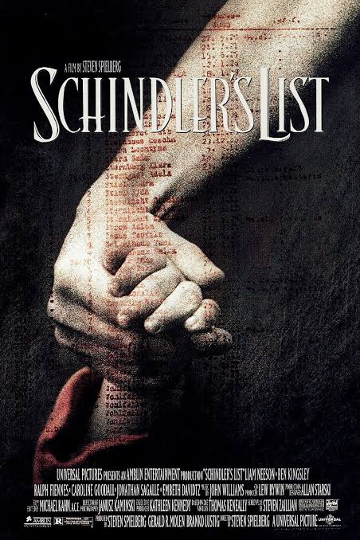
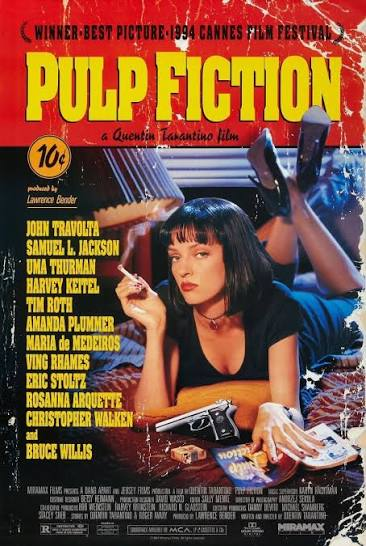
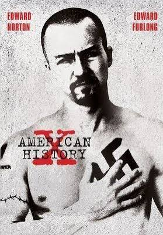
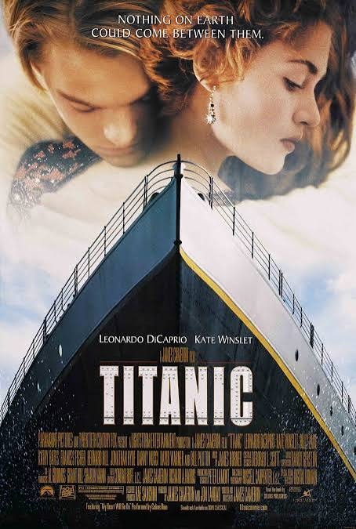
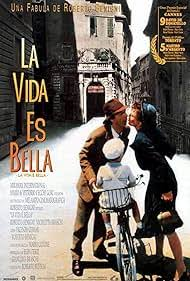

El mejor cine de los años 90
Los años 90 fueron una época memorable para el cine.
El cine independiente ganó reconocimiento, los efectos
especiales evolucionaron y aparecieron historias que
marcaron a toda una generación. Desde la ciencia ficción
hasta el drama, la animación y el suspenso, esta década
dejó películas que siguen siendo clásicos.

Buenos muchachos
Año: 1990
Director: Martin Scorsese
Género: Crimen y drama
Three decades of life in the mafia.
La verdadera historia de Henry Hill, un chico de Brooklyn, mitad irlandés y mitad siciliano, que es adoptado a temprana edad por gánsteres del barrio y asciende en las filas de una familia mafiosa bajo la tutela de Jimmy Conway.

Terminator 2: El juicio final
Año: 1991
Director: James Cameron
Género: Ciencia ficción y acción
ill be back
No es nada personal.
Diez años después de los sucesos de la película original, un T-800 reprogramado es enviado al pasado para proteger al joven John Connor del T-1000, capaz de cambiar de forma. Junto a su madre, Sarah, lucha para impedir que Skynet desencadene un apocalipsis nuclear.

El silencio de los inocentes
Año: 1991
Director: Jonathan Demme
Género: Suspenso y crimen
"A census taker once tried to test me. I ate his liver with some fava beans and a nice Chianti."
Clarice Starling es una alumna brillante en la academia de entrenamiento del FBI. Jack Crawford quiere que Clarice entreviste al Dr. Hannibal Lecter, un psiquiatra excepcional y un psicópata violento que cumple cadena perpetua por diversos asesinatos y actos de canibalismo. Crawford cree que Lecter podría tener información clave sobre un caso y que Starling, por ser una joven atractiva, podría ser el cebo perfecto para que hable.

Parque Jurásico
Año: 1993
Director: Steven Spielberg
Género: Aventura y ciencia ficción
Un acaudalado empresario crea en secreto un parque temático con dinosaurios vivos recreados a partir de ADN prehistórico. Antes de la inauguración, invita a un equipo de expertos y a sus dos nietos, llenos de ilusión, a conocer el parque y tranquilizar a los inversores. Sin embargo, el parque resulta ser todo menos divertido, ya que los sistemas de seguridad fallan y los dinosaurios escapan.

La lista de Schindler
Año: 1993
Director: Steven Spielberg
Género: Drama histórico
WHOEVER SAVES ONE LIFE SAVES THE WORLD ENTIRE
La verdadera historia de cómo el empresario Oskar Schindler salvó más de mil vidas judías de los nazis mientras trabajaban como esclavos en su fábrica durante la Segunda Guerra Mundial.

shawshank redemption
Año: 1994
Director:Frank Darabont
Género: Drama
Fear can hold you prisoner. Hope can set you free.
Encarcelado en la década de 1940 por el doble asesinato de su esposa y su amante, el honrado banquero Andy Dufresne comienza una nueva vida en la prisión de Shawshank, donde pone sus habilidades contables al servicio de un alcaide sin escrúpulos. Durante su larga estancia en prisión, Dufresne se gana la admiración de los demás reclusos, incluido un preso mayor llamado Red, por su integridad y su inquebrantable esperanza.

Pulp Fiction
Año: 1994
Director: Quentin Tarantino
Género: Crimen
No conocerás los hechos hasta que hayas visto la ficción.
Un sicario aficionado a las hamburguesas, su socio filósofo, la amante de un gánster adicta a las drogas y un boxeador venido a menos convergen en esta extensa y cómica historia de crímenes. Sus aventuras se desarrollan en tres relatos que viajan ingeniosamente entre el pasado y el presente.

American History x
Año: 1998
Director:Tony Kaye
Género:Drama
some legacies must end
Derek Vineyard sale en libertad condicional tras cumplir tres años de prisión por el asesinato de dos hombres afroamericanos. A través de la narración de su hermano, Danny Vineyard, descubrimos que antes de ir a prisión, Derek era un cabeza rapada y el líder de una violenta pandilla supremacista blanca que cometía crímenes racistas en todo Los Ángeles, y que sus acciones influyeron enormemente en Danny. Reformado y recién salido de prisión, Derek rompe todo contacto con la pandilla y se propone proteger a Danny …

Titanic
Año: 1997
Director: James Cameron
Género: Romance y drama
Nothing on earth could come between them.
A bordo del famoso transatlántico, Jack y Rose
se enamoran pese a sus diferencias sociales.
Su relación se desarrolla mientras el barco
se aproxima a la tragedia de 1912. La película
destacó por su escala, efectos y banda sonora.

life is beutiful
Año: 1999
Directores:
Género:drama y comedia
An unforgettable fable that proves love, family and imagination conquer all.
Una conmovedora historia sobre un librero italiano de ascendencia judía que vive en su propio cuento de hadas. Su vida creativa y feliz se ve truncada abruptamente cuando toda su familia es deportada a un campo de concentración durante la Segunda Guerra Mundial. Encarcelado, intenta convencer a su hijo de que todo es solo un juego.